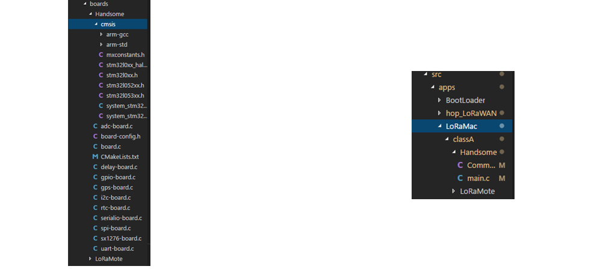

LoRa测试床技术实现¶
本小节主要从技术实现上介绍我们如何搭建测试床，以供读者参考。测试床的实现分为两个部分，第一个部分是搭建自己的LoRa网络，第二个就是搭建管控平台对LoRa网络进行管控。
LoRa网络搭建¶
我们知道一个完整的LoRa网络包含节点，网关，服务器三部分。因此，搭建一个LoRa网络就需要分别对这三个部分进行搭建和实现：
- 实现节点的应用的程序，我们目前实现了基于SX1278和SX1268两套程序。
- 搭建网关服务。
- 搭建LoRa服务器
我们下面就从这三个方面进行展开介绍。
-
首先是实现节点的应用程序
我们之前介绍了我们的两款节点硬件组成和组装情况。我们采用的参考代码在这里。使用git clone命令下载到本地仓库，这里的代码使用的是VS code平台。
首先应该先配置环境，分别需要配置Cmake, GNU ARM-Toolchain以及OpenOCD,相应的配置要求在这里。
为了使代码适用于我们自己的硬件，需要对代码进行修改移植，修改的地方主要是与硬件相关的地方。首先在boards文件夹下新建一块适用于自己硬件的板子，可以随意起名，我们这里名Handsome，具体文件组织和所需文件如下图所示。硬件的修改主要为MCU和Radio两部分，上述代码提供了很多相似的硬件代码，我们可以copy相应的代码。注意的是board-config.h为自己的硬件对应的引脚。
 图. 节点代码和应用代码目录修改得到了自己的板子，然后就可以在app下面新建自己的板子对应的应用，如上右图。调试的方法可以先调通串口打印相关的代码，然后用串口进行调试。还需要注意的是要让这个程序运行起来，需要修改相应的CMakeLists.txt文件，它控制着代码的编译生成。修改方法是，找到修改目录下对应的CMakeLists.txt文件(若没有，需要自己生成)，修改的地方可以参考这个文件的编写，比如新增了Boards下名为Handsome的板子，就需要在Handsome下新建一个CMakeLists.txt，这个文件的编写，可以参考其他板子下的CMakeLists.txt文件。同时在外层的CMakeLists.txt里要新增这个板子，这个也可以参考其他板子，比如搜索一下板子LoRaMote的使用地方，然后仿照添加进去。
如何烧写程序
1 2 3 4 5 6 7 8 9 10 11 12 13 | |
- 网关服务的搭建。
购买的网关通常自带了相关的LoRaWAN代码，我们可以直接使用。当然我们也可以自己搭建网关服务，网关的代码一般包含网关硬件控制相关的代码LoRa_gateway和通信代码packet_forwarder。我们参考代码分别为LoRa_gateway和packet_forwarder。
1 2 3 4 5 6 7 8 9 10 11 12 13 14 15 16 17 18 19 20 21 22 23 | |
-
搭建LoRa服务器。
LoRa服务器的搭建有比较详细的教程，见这里。 LoRa服务器也可以分为三个部分, LoRa gateway bridge, LoRa server 和 LoRa app server。 读者可以使用我们实验室自己搭建的loraserver, 地址为 https://loraserver.thulpwan.top/
首先需要注册一个账户并登陆，再创建自己的application，其中name和description自己随意填，service-profile随意选，payload codec留空即可。点击提交完成。
然后点击创建节点。name和description自己随意填，device eui需要唯一且与自己节点端代码一致。device-profile选择test-abp即可。选中disable frame-counter validation，提交即完成.
之后填写节点配置信息。可以选择generate也可以自己手写，最好保持唯一性。而且这些值应该同节点代码中保持一致。简单起见，可以使后四个key取相同值。
运行节点，网关和服务器，不出意外，网关和服务器端均能收到abp配置的节点消息。
为了测试是否能够收到包，进入loraserver主界面，随便点一个app，在上面的第三行有一个integration。 点击创建INTEGRATION，选择kind为HTTP integration，四种URL可以填一样的，也可以填不一样的进行区分，ip或者域名为你创建的应用。提交即可在应用里收到上行数据。
控制平台搭建¶
-
树莓派管控系统 我们使用前后端分离的设计理念进行搭建，因此我们也将从前端和后端两部分进行介绍。
-
前端 前端系统开发采用的框架是蚂蚁金融前端解决方案ant design pro，该解决方案基于React实现，使用umi搭建框架。 这个框架使用起来很方便，只需要切换到目录，使用
npm install npm start即可启动，并且支持时时更新浏览。
1 2
开发过程中每一个页面对应于框架中的一个js文件，js文件中使用render函数来渲染页面，该函数返回的结果为dom块，这个dom块就会被渲染到对应的界面中。开发者可以利用参数来控制dom块的渲染结果，从而方便地对页面的展示效果进行条件控制。 前端的主要页面包括**系统概况、使用说明、地图视图、节点预定、节点管理、LoRaServer、关于我们**。 -
后端 后端实现采用的是Java的Spring，SpringMVC和Mybatis框架，即SSM框架。构建项目采用Maven工具，通过pom.xml把Spring、SpringMVC、Mybatis整合起来。下面简单介绍一下SSM三个框架的作用。
1 2 3
Spring：Spring使用最基本的Java Bean来替代EJB的作用。简单来说，Spring是一个轻量级的控制反转（IoC）和面向切面（AOP）的容器框架。 Spring MVC：Spring MVC 分离了控制器、模型对象、分派器以及处理程序对象的角色，使得它们更容易定制。 Mybatis：MyBatis是一个基于Java的持久层框架。MyBatis 消除了几乎所有的JDBC代码和参数的手工设置以及结果集的检索。通过配置，MyBatis 将接口和 Java 的POJOs 映射成数据库中的记录。
采用树莓派管控的模式依赖网络和电源。这些在实际部署应用中都严重限制了LoRa测试床网络的拓展和部署。因此，我们特别地设计了一套LoRa设备自主远程更新的方法，用来摆脱4G、WiFi等网络以及电力的限制，达到更加灵活部署，更新目的。我们将在后面的章节进行详尽的介绍。
优化部署和实现¶
- 微服务
由于LoRaWAN网络的架构，不同实体的轻量级功能可以被部署为微服务。随着集装箱化的成功技术，如Docker [15]，微服务可以被认为是容器，导致非常快启动并可以轻松部署。 为了实现一个LoRaWAN网络在紧急情况下支持自动恢复如地震，火灾，飓风或任何其他情况 那可能会破坏部分核心网络基础设施,微服务编排平台的使用可能适合这些.其在CPU，内存的使用效率也会更高。
- 地理定位服务
基于现有LoRa组件可以提供TDOA定位所需要的所有设备要求，根据LoRa包达到不同LoRa网关时间的不同，可以依次计算达到距离差，从而根据至少3个网关的2条双曲线交点从而计算出待定点。现有的技术可以达到20-200m的精度。
具体来说，在乡村和空旷的地段，地理定位服务将提供最大的精度，而在城市和密集环境下会有的多径问题。精度将会随着网关数量的上升而上升。
在提供定位时，由于终端节点不确定的位置，定位功能为节点带来了额外的功耗开销，所以将会消耗更多的电力。所以通常固定位置的节点使用Class A模式，而需要地理定位的节点被实现为Class B或者Class C模式。